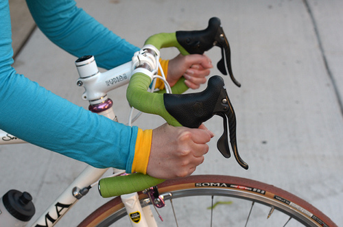

Are "Drop" handlebars right for you?

Why to use drop handlebars:
- They offer multiple hand positions
- They have a high and low body position
- They’re more aerodynamic in headwinds or for high-speed riding
- They’re narrow enough to squeezing through traffic
- They can be paired with ‘cross’ levers so that you have two sets of brake levers
Why to NOT use drop handlebars:
- They’re not as stable-feeling for inexperienced cyclists given their narrow width
- They’re not as wide as any of the other bars for slow speed or out-of-the-saddle stability
- There’s limited access to brake levers
- There’s less handlebar space for accessories
- Bar tape must be used, which can be rather easy to tear